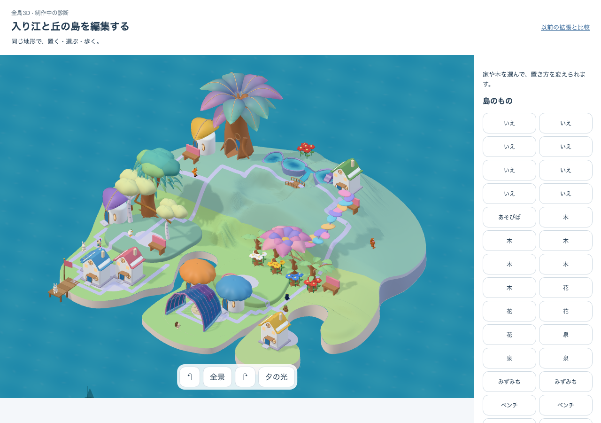
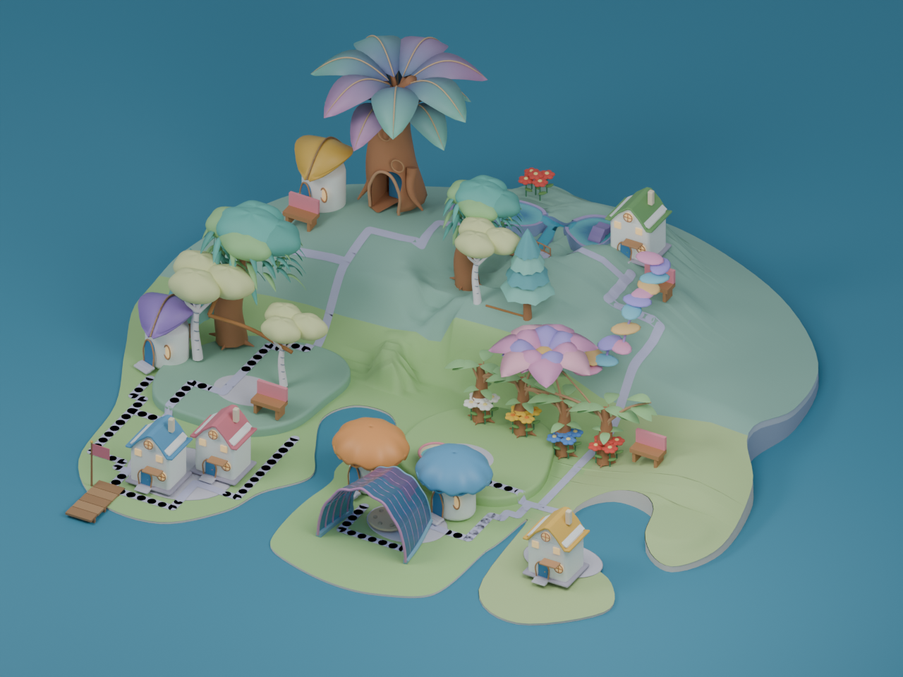
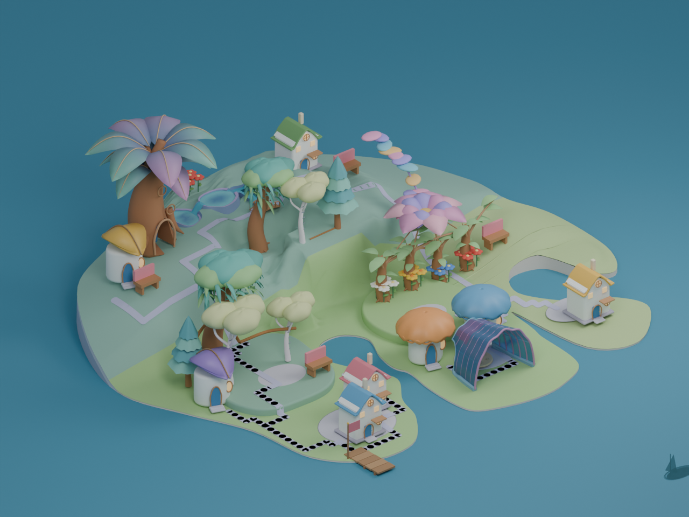
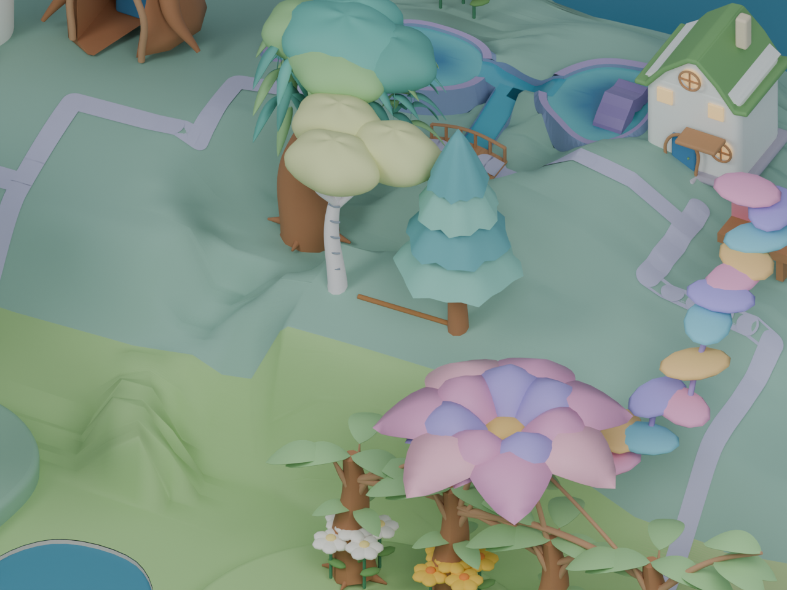

左は承認像、中央は c4 実アプリ、右は同じ実 owner layer に中央肩を追加した offline source。人物・水面線・照明・カメラに差があり、同一render比較ではありません。右の静的全景を本人保存・通常取得・M1採用の証拠にはしません。




6軸批評 29 / 60 · 本体 adapter handoff · 実三角形断面 · source SHA / render settings · 独立児童観察 N=0